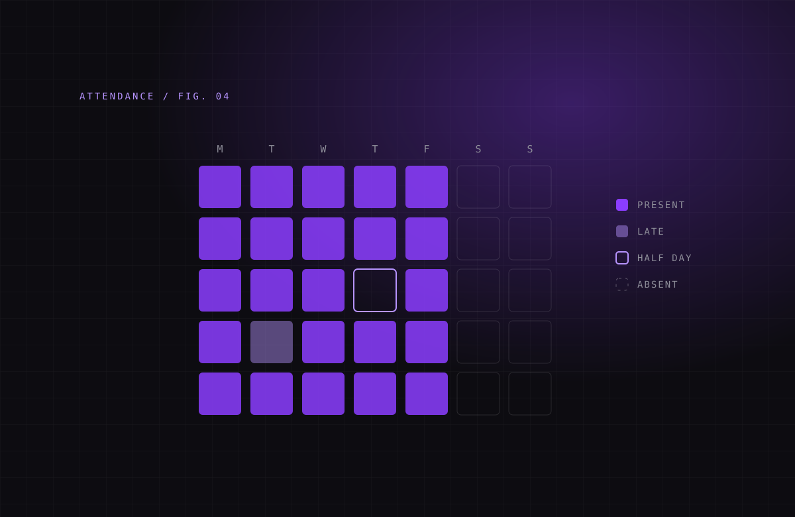

I analyse malware and research security. I understand threats by taking them apart.
02
Infrastructure roots.
My foundation is IT infrastructure: networks, Linux and the systems everything runs on.
03
Code by hand.
A budding programmer. I write Python, C and Bash to automate, analyse and build my own tools.
04
Always learning.
I'm pursuing an M.Tech in Cyber Forensics & Information Security. I'm never done learning.
Experience
Where I've worked.Building, teaching and the field.
Aug 2026 – Present
Developer
Sentri Systems
I build the software and infrastructure behind Sentri's access-control systems for tunnel construction sites.
Took over the Tunnel ID System from a colleague's first version and upgraded it: fingerprint and UHF RFID tracking of workers and vehicles, emergency roll call, headcount checks, alerts and daily backups.
Built an admin console that puts every site dashboard behind one login, with admin and read-only roles.
Connected the sites through a private Tailscale network, with Cloudflare Tunnel and Access in front of anything reachable from the internet.
Built a student and staff attendance system on the same reader hardware.
Worked out the protocol of an LED display board to show live headcounts on site, and wrote user manuals in English and Hindi.
Paper marksheets are slow to check and easy to fake.Boards issue digitally signed marksheets, and anyone verifies one by scanning its QR code.Prototype, fictional data Next.js · TypeScript · Drizzle · Docker

WK-04
Sentri Attendance.
Schools need a daily register, not a count of who is inside.Fingerprint and RFID punches become one record per person per day: present, late or half day.Deployed, v1 Flask · SQLite · ZKTeco · UHF RFID